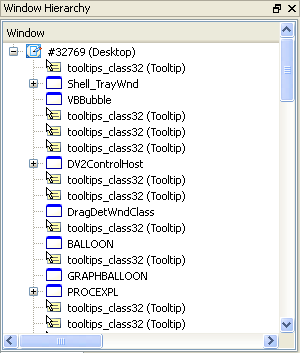
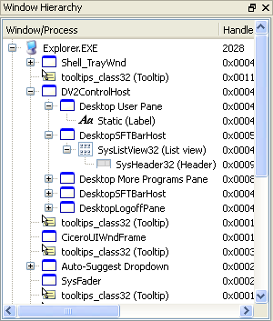

All windows in the system are displayed in one of two tree views in the main Window Detective pane. These trees are a hierarchy of parent and child windows. The first tree lists all top-level windows, that is, all children of the desktop window. The second tree lists windows by their owner process. The children of these windows are nodes of their parent item, the same for both trees.
|

The desktop window tree |

The process window tree |
Each tree view has a number of columns that display window properties such as handle (HWND), text and dimensions.
Right-clicking on an item will pop up a context menu with actions for that window. These are:
| View Properties | Opens a property pane on the selected window. |
| Set Properties | Opens a dialog to set the properties of the window. |
| Messages | Opens a pane which logs all messages sent to the selected window. |
| Expand All | Recusively expands all child items of the selected item. |
| Edit Window Styles | Opens the "set properties" dialog on the window styles tab. |
| Flash | Flashes a border around the window. The border style can be set in the preferences. |
| Show | Shows the window. This does nothing if the window is already visible. |
| Hide | Hides the window. This does nothing if the window is hidden. |
| Close | Sends a WM_CLOSE message to close the window. The owner application may do other processing, such as prompting the user for confirmation, prior to destroying the window. |